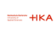

Hochschule Karlsruhe - UCL_Ventura
UCL_Ventura Control
UCL Ventilator
UCL_Ventura User Interface
On/Off
FLow in (slm3)
O2 (%)
Measured Data
Sensor
Sensor Data
FLow in (slm3)
FLow out (slm3)
Pressure (mbar)
O2 (%)